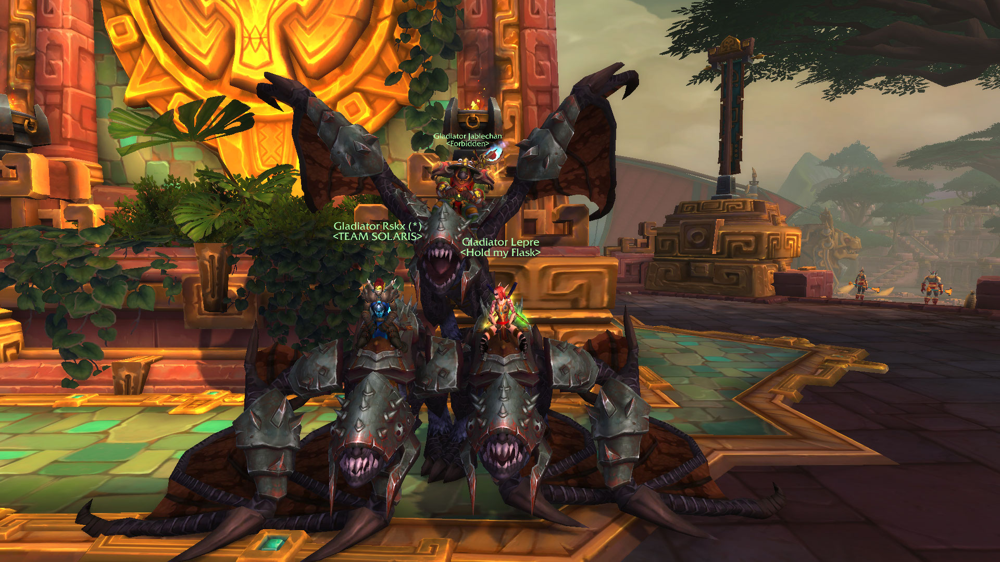

Tavoitteet
Täällä kerron enemmän omista tavoitteista koskien pelien- ja sivustojenkehitykseen. Tuon samalla omia harrastuksia esille.Samalla myös koitin tommosta blog tyyppistä hommaa... Ihan vaan mielenkiinnosta niiku..

Täällä kerron enemmän omista tavoitteista koskien pelien- ja sivustojenkehitykseen. Tuon samalla omia harrastuksia esille.Samalla myös koitin tommosta blog tyyppistä hommaa... Ihan vaan mielenkiinnosta niiku..
Olen alun perin Kainuusta kotoisin oleva ukkeli. Useampi eri ammatti on tullut opiskeltua ja armeijassa käytyä. Nyt olen päässyt tradenomi linjalle opiskelemaan ja olen kyllä todella paljon tykännyt tästä. Monimuoto opiskelua ja iltapainotteista. Itselle tämä malli tuntuu toimivan paremmin kuin päiväopiskelu. Ensimmäinen projekti nettisivun parissa on saatu purkkiin ja siitä jäi hyvä mieli ja asioita missä haluaa parantaa jatkossa. Peliala kiinnostaisi kovasti , mutta sivustojen tekeminen on ollut myös todella hauskaa.
 Tietokonepelejä on tullut aina pelailtua ja ihmeteltyä. World of Warcraft on ollut se mitä olen pelannut enemmän.Sitten tietenkin muutamia muita, jotka ovat olleet hyviä mm. Conan the Exiles, Hollow knight ja Monster hunter world. Samalla myös lautapelejä on tullut välistä pelailtua ja nuorempana warhammeria.
Pelaaminen lähti itseltä , kun isä osti 8-bittisen nintendon kirpparilta ja taisin silloin olla jotain 6 vuotias. Super Mario 1, 2 ja 3 löytyivät silloin ja niitä oli hauska pelata. Tottakai duck hunt löytyi ja pistooli. Eihän sitä vieläkään voi unohtaa , kun ampui ohi ja "SE" koira nousi puskasta ja alkoi nauramaan....aivan loistaa. Ainahan sitä piti päästä omaa isää haastamaan yleisurheilu pelissä , missä piti hakata nappulaa niin nopeata kuin pystyi. Parasta oli vaan nähdä ku ei se isä ukko armoa antanu hakkas sitä nappia ku hullu ja voitti. Muutamia vuosia takaperin tuli kaivettua vanhemmilla konsoli ja koitettua pelata sitä itsekseen, muistiin oli jäänyt kyseinen kohta siinä urheilu pelissä mikä tuntui silloin todella hankalalta. Siinä oli korkeushyppy ja sehän oli Tomi 6v:lle tosi haastava ja en tainnu siinä koskaan onnistua tiputtamatta rimaa. Nyt kuitenkin sen sai läpi ja olihan se omalla tavallaan hieno tunne. Samalla piti pelata muita pelejä läpi mitä oli nuoruudessa jäänyt pelaamatta.
Itselle aina pelaaminen on ollu hauskaa ajan vietettä ja yhdessä olemista. Sen kautta on aina pystyny nollaamaan omat aivot ja tekemään jotain kaverien kanssa, jotka nytkin asuvat eripuolilla suomea.
Muutaman kerran olen käynyt vaelluksella, mutta muuten luonnossa liikkuminen ja eräily on ollut rauhouttavaa. Maastopyöräilyä tullut harrastettua myös ja se on ollut kivaa. Eniten noissa kiinnostaa se vapaus mennä ja valita omat reitit ja katsella ympärilleen.